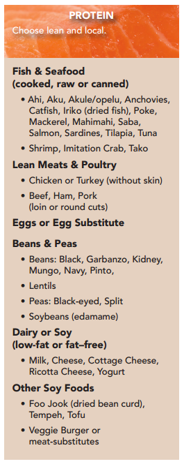

Review the list of high-quality protein sources. You are probably already quite familiar with them. However, they deserve a closer look due to their high protein content.
Tip: Eggs, fish, chicken, pork, and lean beef pack a generous punch of protein at about 15-35 grams with each 3 or 3.5-ounce serving!
Experiment with changing the protein source in some your favorite recipes or make a simple stir-fry. Chop up some veggies, choose a protein source, and add some seasoning.
Here are more specific protein ideas.
